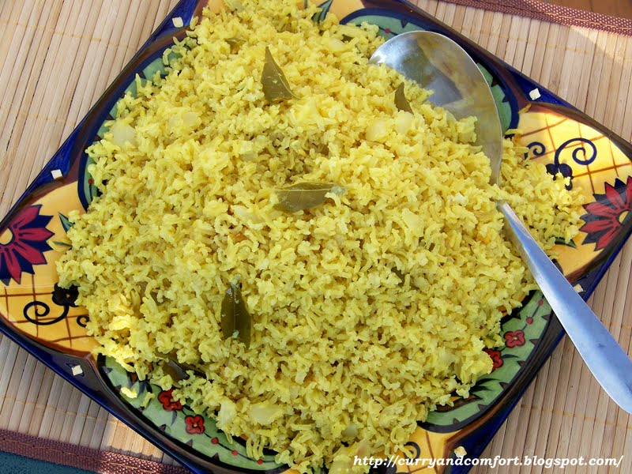

Yellow Rice

Description
While yellow rice is a dish made around the world, this particulary version comes from the Burgher community in Sri Lanka. Fragrant and sticky, this rice can be eaten on its own or part of a larger meal. Note: recipe from Rambutan by Cynthia Shanmugalingam.
Ingredients
- 200g short grain rice
- 1 1/2 tbsp butter
- 1/2 red onion, thinly sliced
- 6 whole cardamom pods, lightly bashed
- 6 cloves
- 10 black peppercorns
- 1 tsp ground turmeric
- 10 fresh curry leaves
- Optional: 3cm piece of pandan leaf
- 300ml chicken stock
- 150ml coconut milk
- 1 tsp salt
Steps
- Rinse rice and drain well
- Add butter to a medium saucepan over medium-high heat. Once melted, cook onion for 5-6 minutes
- Once onion is translucent and slightly borwn, add spices, curry leaves, pandan leaf, and rice then fry for 2-3 minutes while stirring
- Pour in chicken stock and coconut milk, then add salt. Bring to a boil, then simmer with the lid on for 11-12 minutes until rice is cooked. The spices will emerge at the top when it is done. Remove any unwanted spices and serve